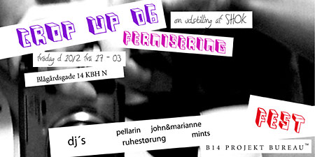

dunst Recommends:
10. Februar 2006

CROP UP 06
Fotoudstilling af SHOK
Lir af B14
DJ's:
Pellarin, Ruhestørung, John&Marianne og Mints
Fredag den 10.02.06
Fernisering 17-20
Fest 22-03
Blågårdsgade 14
Bring it,
B14 & SHOK
Tilbage